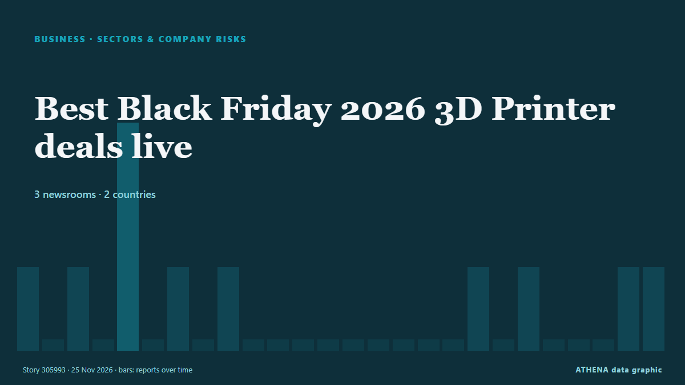

Κλάδοι & εταιρικοί κίνδυνοι
ΧορηγούμενοΠαρουσιάζεται από  Cybernetics and Artificial Intelligence Lab Welcome to the Cybernetics and Artificial Intelligence Laboratory, established at the Department of Business Administration of the National and Kapodistrian University of Athens. The lab is headed by Professor Dimitrios Thomakos. The lab aims to do research that can be published in top venues. Our research uses tools and methods of Artificial Intelligence, and lies in the following areas: - Forecasting - Decision making - Cyber security - Finance We are always looking forward to collaborating with exceptional students!
Cybernetics and Artificial Intelligence Lab Welcome to the Cybernetics and Artificial Intelligence Laboratory, established at the Department of Business Administration of the National and Kapodistrian University of Athens. The lab is headed by Professor Dimitrios Thomakos. The lab aims to do research that can be published in top venues. Our research uses tools and methods of Artificial Intelligence, and lies in the following areas: - Forecasting - Decision making - Cyber security - Finance We are always looking forward to collaborating with exceptional students!
| 12 Νοε | 0 |
|---|---|
| 13 Νοε | 0 |
| 14 Νοε | 0 |
| 15 Νοε | 0 |
| 16 Νοε | 0 |
| 17 Νοε | 0 |
| 18 Νοε | 0 |
| 19 Νοε | 0 |
| 20 Νοε | 2 |
| 21 Νοε | 2 |
| 22 Νοε | 1 |
| 23 Νοε | 2 |
| 24 Νοε | 3 |
| 25 Νοε | 0 |
Οι τίτλοι των ειδήσεων παρουσιάζονται στα αγγλικά, όπως δημοσιεύτηκαν.

Best Black Friday 2026 3D Printer deals live
Here are some of the best 3D printer deals we've found for you this Black Friday. από Tom's Hardware
Tech giants to face billion-dollar fines for breaching Labor’s digital duty of care laws
The fines – for allowing harmful content to fester on social media platforms – are exponentially greater than the original maximum penalties set at $109.2 million per breach. από Sydney Morning Herald
Honda, Toyota Recall 1.6 Million Vehicles Over Takata Airbag Rupture Risk
WASHINGTON: Honda and Toyota Motor said on Friday they are recalling about 1.6 million cars, trucks and SUVs over a risk that Takata airbag inflators could rupture.Honda and Toyota... από Oman Observer
‘She was frustrated’: Anupam Kher recalls Deepika Padukone’s maid act in acting class
Dubai: Bollywood star Deepika Padukone was once left frustrated and almost in tears during an acting exercise, veteran actor and former tutor Anupam Kher has recalled. από Gulf News
GTA 6 shatters entertainment industry records: The Washington Post
In an unprecedented achievement for the global entertainment industry, The Washington Post reported that Grand Theft Auto 6 – the long-awaited installment of the GTA video game franchise – has… από Egypt Independent